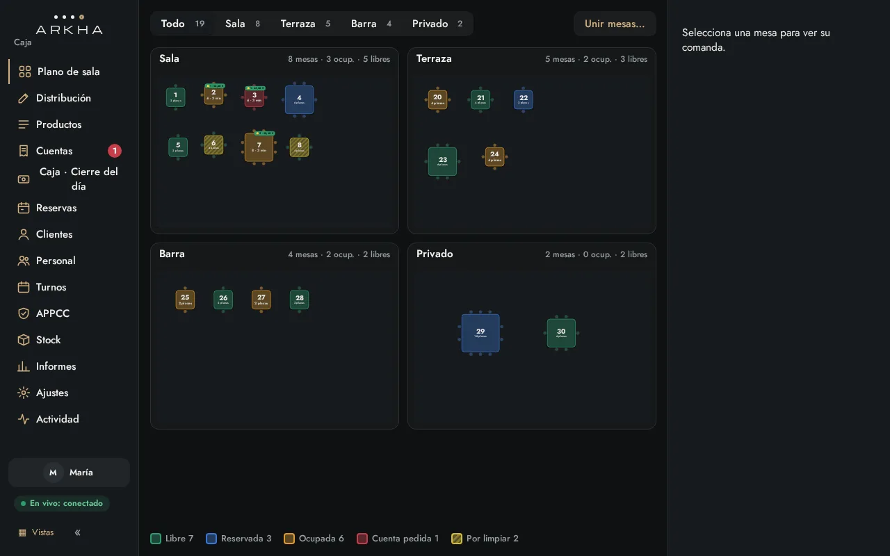
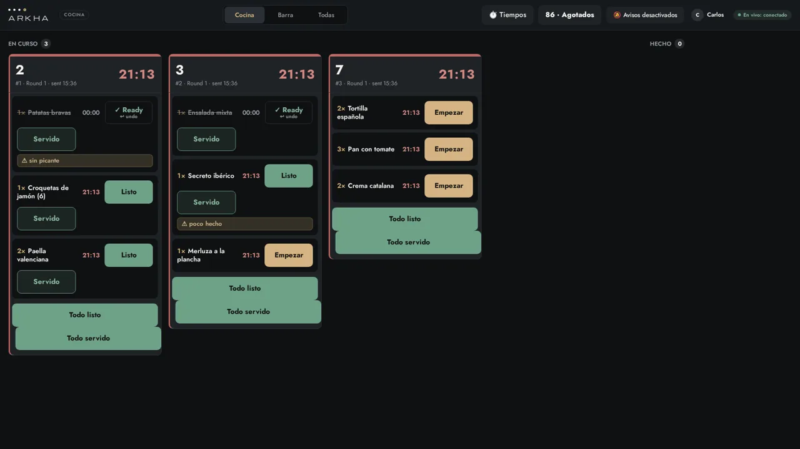
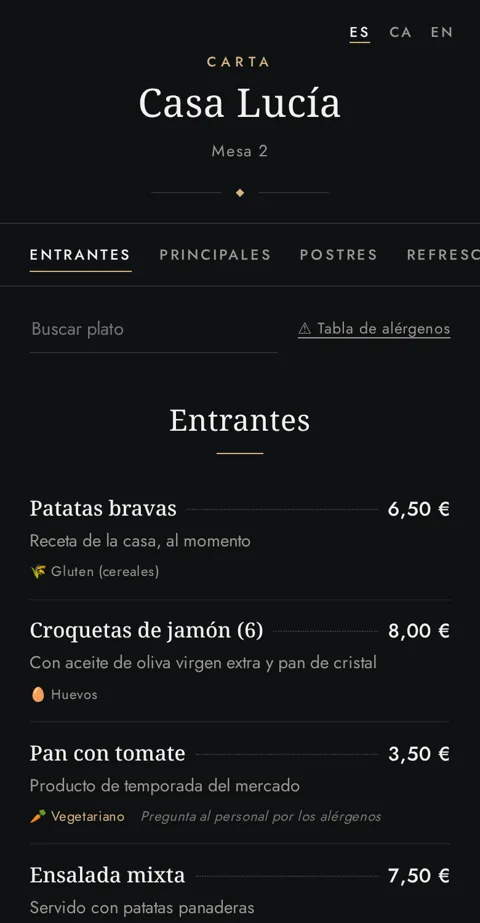
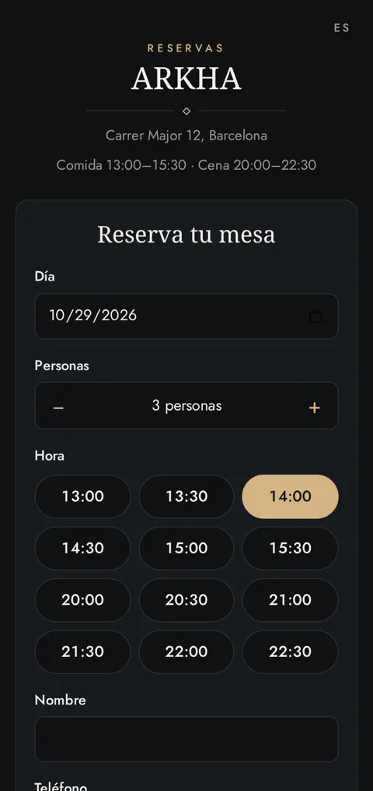
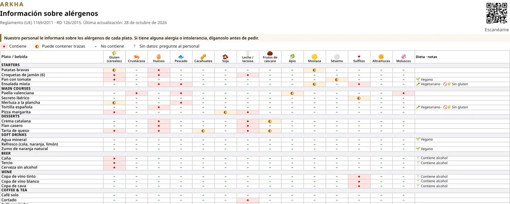

TPV para restaurantes
El TPV de tu restaurante, de la sala a la cocina.
ARKHA POS reúne mesas, comandas, cuentas, reservas online y carta QR en un sistema sencillo, en español, que funciona en un pequeño dispositivo dentro de tu local. Hecho en Cataluña.

Funciones
Plano de sala
Diseña tu sala por secciones (sala, terraza, barra…), ve el estado de cada mesa de un vistazo y une mesas cuando llega un grupo.
Comandas a cocina y barra
Los pedidos llegan a la pantalla de cocina o de barra con temporizadores, para que nada se quede esperando.
Cuentas por día
Historial de cuentas cobradas agrupado por día, con filtros por periodo y forma de pago, y búsqueda.
Preparado para Verifactu
Facturación diseñada desde el inicio para Verifactu (registros encadenados y QR en el ticket). Actualmente en modo pruebas.
Reservas online
Tus clientes reservan desde la web con disponibilidad real de mesas, y ARKHA asigna la mesa automáticamente.
Carta QR
Carta digital para el móvil del cliente, con varios temas visuales para elegir (en desarrollo) y alérgenos en cada plato.
Ficha de alérgenos
Tabla de los 14 alérgenos generada a partir de tus productos, lista para imprimir o consultar.
Acceso del personal con PIN
Cada persona entra con su PIN y su foto de perfil. Rápido en el servicio, claro en la actividad.
Modo claro y oscuro
Interfaz en español sencillo, con tema claro, oscuro o automático según la luz del local.
Cómo funciona
- 01
Un dispositivo en tu local
ARKHA corre en un pequeño equipo local (tipo Raspberry Pi). La sala sigue funcionando aunque falle internet.
- 02
Caja, móvil y cocina
Caja en el ordenador o tablet, camareros desde el móvil y pantalla en cocina y barra, sincronizados en tiempo real.
- 03
Copia en la nube
Tus datos se guardan con copia de seguridad en la nube para que no pierdas nada.
Capturas
Todas las capturas usan datos de demostración.




Pensado para cumplir
RGPD
Los datos de reservas se usan solo para gestionar la reserva y se pueden borrar automáticamente pasado un plazo.
Sin cookies de seguimiento
Ni ARKHA ni esta web usan cookies de seguimiento ni scripts de terceros.
Alérgenos
Información de alérgenos por plato en la carta y en una ficha imprimible, según el Reglamento (UE) 1169/2011.
Pide una demo
Cuéntanos cómo es tu restaurante y te enseñamos ARKHA funcionando.